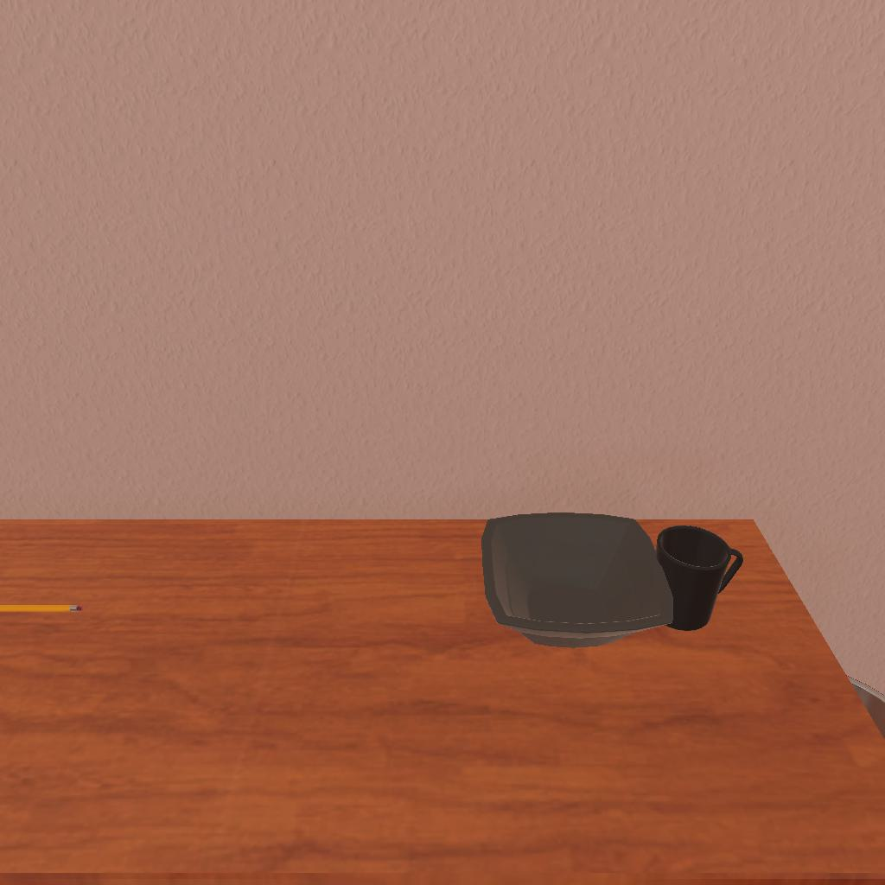

---------------------------------------------------------task: 2---------------------------------------------------------
--------------------------------------------------------------------------------------------------------------------------------------------------------------------
--------------------------------------------------------------------------------------------------------------------------------------------------------------------
Step:--------------------------------------------------------------------------3-------------------------------------------------------------------------------
----------------------------------------
VLM Prompt:
Image1:
Image2:
Image3:
**Instruction**
1. Analyze the provided images to identify all visible household objects and compare the difference between images (e.h. whether the object is opened or not and taken on hand or not), focusing on those relevant to the task description "examine the pen with the desklamp."
2. Use the analysis of images and the task hint "The agent must find an object of the desired type, locate and turn on a light source with the desired object in-hand." to answer the question: what is the most reasonable action in the choices for the task description "examine the pen with the desklamp"?
3. Decide and write the answer using the template: The answer is: (i): , where i is the real number. If there is no desired object in images, search every place based on **Initial Observation** to find the object. And if no one is exactly correct, choose a similar answer.
**Initial Observation**
You are in the middle of a room. Looking quickly around you, you can see bed (1-2), dresser (1), drawer (1-11), sidetable (1-2), desk (1), garbagecan (1), safe (1)
**Answer Choices**
(1): go to bed 1
(2): go to dresser 1
(3): go to bed 2
(4): go to drawer 1
(5): go to sidetable 1
(6): go to drawer 2
(7): go to sidetable 2
(8): go to drawer 3
(9): go to drawer 4
(10): go to garbagecan 1
(11): go to drawer 5
(12): go to drawer 6
(13): go to drawer 7
(14): go to drawer 8
(15): go to drawer 9
(16): go to drawer 10
(17): go to drawer 11
(18): go to safe 1
(19): put pencil 1 in/on desk 1
(20): examine pencil 1
**Answer**
Let's think step by step by following the instructions.
----------------------------------------
----------------------------------------
Original Response:
1. Analyzing the images, we can see a pencil (which could be referred to as a pen in the task description) on a desk, a hat, and a mug. There is no visible difference between the images concerning the pencil. The pencil is not opened, taken in hand, or altered in any way. There is no desklamp visible in the images.
2. Based on the analysis, to complete the task "examine the pen with the desklamp," the agent must first locate a desklamp to examine the pen (pencil) with it. The task hint suggests finding a light source and turning it on with the desired object (pencil) in-hand. Since no desklamp is visible in the images, the agent should search the room to find one.
3. Using the Initial Observation, the agent must search around the room to find the desklamp. None of the answer choices directly involves finding or turning on a desklamp, so the agent must choose an action that involves searching for the desklamp in places it might be located, such as on a desk or sidetable.
The answer is: (5): go to sidetable 1
----------------------------------------
----------------------------------------
>>> Refine Original VLM Response and Get Pure Action: go to sidetable 1
----------------------------------------
-----------------------------------------------------------------
Running time: 14.728907346725464 seconds
Total Money: 0.79186
-----------------------------------------------------------------
-----------------------------------------------------------------
Text Observation:You arrive at loc 4. On the sidetable 1, you see a alarmclock 1.
-----------------------------------------------------------------
UNSUCCEED